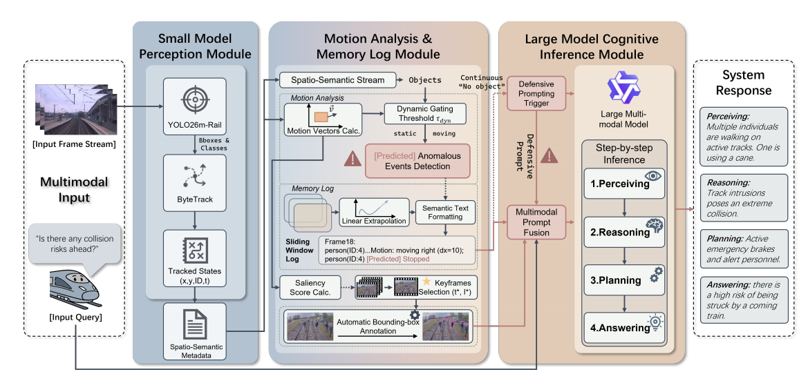
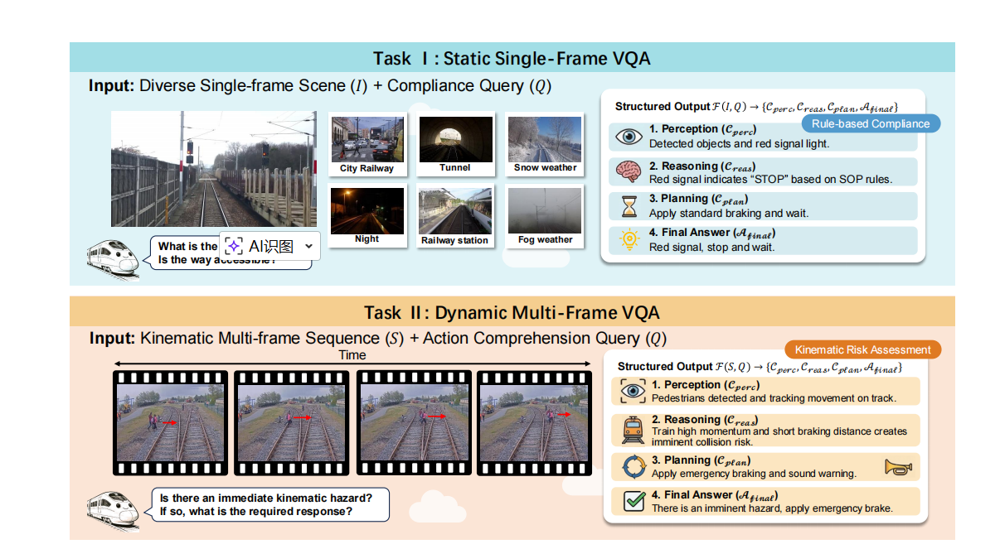
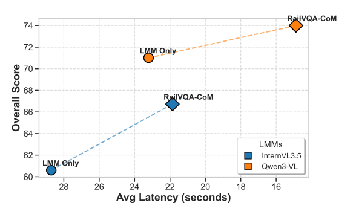
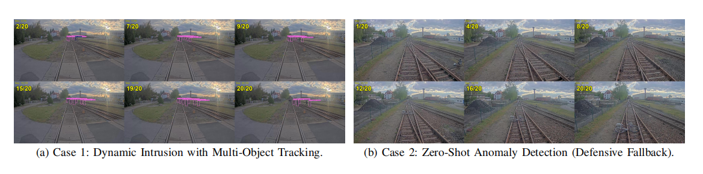

Keep this section in a two-column layout like the OpenNav style. You can directly replace each placeholder with
an embedded <iframe> or <video> later.

Fig. 1. Overview of the proposed RailVQA-CoM framework. This figure should serve as the central method illustration of the project page and visually summarize the full collaborative reasoning pipeline for automatic train operation scenarios. Compared with conventional end-to-end perception pipelines, RailVQA-CoM explicitly decomposes the decision-making process into lightweight front-end perception, temporal motion understanding, and high-level structured cognition.
More specifically, the figure is recommended to emphasize the interaction among three tightly coupled modules: (1) a small-model perception module responsible for efficient object detection, scene parsing, and target extraction in railway cab-view observations; (2) a motion analysis and memory log module that accumulates temporal evidence across frames, tracks dynamic entities, and organizes compact state descriptors for later reasoning; and (3) a large-model cognitive inference module that consumes structured visual evidence and produces interpretable outputs in the form of perception-level understanding, reasoning chains, planning suggestions, and final safety-aware answers.
This section should visually communicate the key design philosophy of RailVQA: using structured intermediate representations to reduce hallucination, improve explainability, and make multimodal reasoning more reliable for safety-critical train control tasks.

Fig. 2. Task formulation of RailVQA-bench. This figure is recommended to present the unified benchmark design that distinguishes between two complementary but closely related railway cognition tasks: static single-frame visual question answering and dynamic multi-frame visual question answering. Together, these two settings cover both instantaneous scene interpretation and temporally extended safety reasoning.
For the static task, the benchmark focuses on questions that can be answered from a single cab-view image, such as signal recognition, track status judgment, scene compliance analysis, and infrastructure-aware semantic understanding. For the dynamic task, the benchmark introduces sequential visual evidence, enabling questions related to motion trend analysis, intruder evolution, object approach/retreat behavior, collision risk anticipation, and temporal hazard assessment.
Importantly, the figure should also highlight the structured output design of RailVQA-bench. Instead of evaluating only a final textual answer, the benchmark expects a four-part response structure—visual perception summary, explicit reasoning chain, planning-oriented interpretation, and final answer—thereby encouraging interpretable cognition and making the evaluation protocol more aligned with real-world ATO safety requirements.
RailVQA addresses a critical gap in Automatic Train Operation (ATO): existing railway vision datasets and methods mainly emphasize low-level perception, but lack support for high-level reasoning, planning, and interpretable safety cognition.
To solve this, the project contributes two tightly coupled parts: RailVQA-bench, a benchmark for both static and dynamic railway visual reasoning, and RailVQA-CoM, a collaborative large–small model framework that improves efficiency, reduces hallucination, and preserves transparent reasoning steps.
The framework is especially suited for safety-critical scenarios such as signal compliance, track intrusion, collision risk assessment, and defensive fallback under detector uncertainty.

Fig. 4. Detailed pipeline of the proposed inference process. This figure should act as the “zoomed-in” complement to Fig. 1, revealing the internal data flow and intermediate representations that make RailVQA-CoM both efficient and interpretable. In the project page, it is recommended to use this section to explicitly demonstrate how raw visual observations are transformed into structured reasoning-ready evidence.
A suitable visual emphasis here would include the full path from frame acquisition and lightweight detection, to object association and motion estimation, followed by adaptive temporal sampling and memory log generation. These compact structured logs are then passed into the LMM reasoning module, which performs higher-level cognition without directly relying on dense raw video input, thereby significantly improving efficiency and reducing redundant multimodal token consumption.
From a design perspective, this figure is particularly important because it shows that RailVQA-CoM is not simply an LMM-over-video solution. Instead, it is a layered framework that uses small models to stabilize perception and uses structured temporal abstraction to make large-model reasoning more focused, more controllable, and more suitable for deployment in resource-constrained or latency-sensitive railway systems.
This section highlights how the framework preserves interpretable step-by-step reasoning in dynamic railway scenes, including target occlusion handling and defensive fallback for unseen obstacles.

Fig. 6. Qualitative case studies of RailVQA-CoM. This section is best presented as a two-case visual comparison that demonstrates not only the correctness of final answers but also the practical value of structured intermediate reasoning. It is recommended to preserve the original dual-panel organization so that viewers can quickly understand the diversity of scenarios handled by the framework.
In the first case, the page should emphasize dynamic intrusion understanding: multiple objects or workers appearing near the track, temporally evolving spatial relations, and the framework’s ability to maintain target consistency through tracking and predicted state estimation. This example should clearly illustrate how the system uses temporal evidence to judge whether a hazard is transient, approaching, or persistent, which is crucial for proactive safety planning.
In the second case, the figure should focus on zero-shot anomaly handling and uncertainty-aware fallback reasoning. When the front-end detector fails to confidently classify an unusual obstacle, RailVQA-CoM can still leverage broader visual cues and high-level reasoning to infer potential risk and recommend conservative action. This example is especially important because it demonstrates the framework’s robustness under out-of-distribution conditions, which are common in real-world railway environments but often overlooked in conventional benchmark settings.